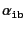
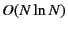

At the very beginning, we sort the list of particle indices as
The first task is to decompose the particles into each group. This is done by the following three steps:
The third step is the crucial one, where the redundant bonds are also detected. Let us focus on the step. The core part of this is implemented in the routine BONDS_GROUPS_gid_check(). This routine is looking for the particles connected to the particle ``i'' whose group id is ``ig.''
First, a bond on the particle i is picked. The bond index is ib. Either  or is equal to i and the other particle (connecting to i) is taken as k. The group id gid[k] would be either one of the three cases:
For the third case, we need to merge the two groups into one. In the present code, we change the latter group belonging to k to the group ig belonging to the particle i. This is done by the routie BONDS_GROUPS_gid_flip. In this case, we don't need to check the connection for k further, because k has been checked (and assigned to some group).
The second case is the important one. This means that the bond between the particles i and k forms a loop inside the same group ig. We identify the bond as redundant. The redundant bonds are stored in the struct loop_bonds (which is defined only for the internal use). In this case, also, we don't need to check the connection.
Therefore, after the third step to define gid[np], we also have the redundant bond list in the struct loop_bonds *lb. With these results, we are able to construct the struct BONDS_GROUP for each group which has the following elements
This algorithm forming the independent bond list bonds has recursive call and the cost would be . But in the simulation, this is called only once at the beginning, so that it doesn't matter.